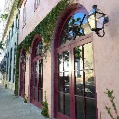
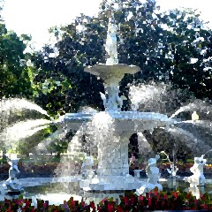
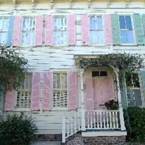
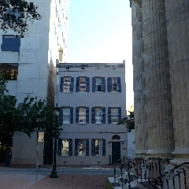
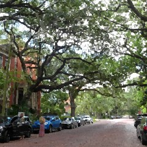
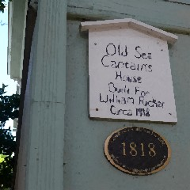
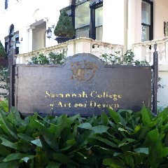
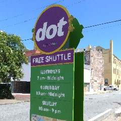
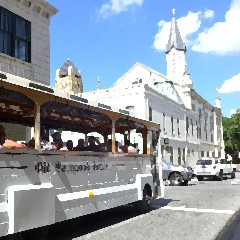
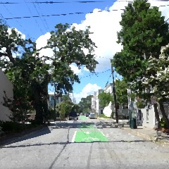

| |
|
II
大話沙凡納，道聽塗說全集 |
|
Savannah有什麼過人之處，如此推薦?
南北戰爭的時候，某將軍一路攻打過來，打到這邊的時候突然說：
啊，這裡也太美，那我們停戰吧。
Savannah大概就是這麼令人深深著迷。
在歷史的發展下，有著美國數一數二古色古香的舊城街景，
還有靠海的地理優勢，海鮮一級棒新鮮。 |
|
 |
 |
 |
|
什麼時候來最好?
根據在地海鮮市場阿姨的說法，
拜訪Savannah最好的時間是三月和十一月，
因為氣候最舒爽。
不過我覺得七八月來也還行，首先夏天日照時間很長有利於出遊。
利用早晨傍晚在外拋頭露面，
很熱的白天安排室內行程或是路上找陰影，
幸運時有海風調節不會太熱。 |
|
出現東方庭園風味
于Pei Ling Chan Gallery |
 |
以為兄弟象紅到這裡
|
|
講古Savannah
在美國早期發現新大陸的時候，地圖上大概就東北以降五六個州，西邊是一片空白的。
而Savannah就是當時最南邊土，如此獨特的位置，在獨立戰爭和南北戰爭裡都有參一腳。
首先1732是個英國將軍Oglethorpe飄洋過海來到這裡深受感動(?)，
於是和當地的大頭目Tomochichi聯手將這裡造成現在如此的棋盤狀都市規劃，
奠立了現在這個每走幾條街就會看到美麗公園綠地的舊城區。
接著由於Savannah盛產棉花，在當時海洋致霸的貿易經濟占有極大優勢，
大外銷下城市非常富饒，如果你有看Hamilton音樂劇，
裡面的人物所處的年代獨立戰爭前後就是這個城市正在發展的時代。 |
|
 |
 |
 |
|
總而言之
來Savannah適合慢遊，放開肚子享受美食(尤其海鮮)，尋訪隨處可拾的歷史傳聞和藝術。
城裡的街景是一幅幅流動的饗宴，橘的藍的綠的各色小矮房，鑄花欄杆轉梯。
聯邦風格希臘風格哥德風格，交織並諧和的共處在棋盤狀分布的二十多處公園邊上。
滿城的大橡樹矗立 (被西班牙苔瘋狂纏繞)，其中最美的街Jones St當之無愧。
如果看到老房子牆上有鑲金邊的號碼牌，那是古蹟保存的編號。
視覺藝術盛名的藝術學院SCAD校區散佈在城內，迸發新舊文化的衝撞融合。
在舊城區(downtown)北至河邊、南至Forsyth Park，步行尋訪巷弄間最有趣。
路邊如果看到設有鑲金邊的綠色立牌，不妨停下腳步閱讀，
一個轉角一棟建築一塊大石都可能有一個故事在其背後。 |
|
 |
 |
 |
|
有免費公車系統繞著舊城循環路線供搭乘但是現在這樣避免搭乘大眾交通工具為佳。
另外，雖然Savannah標榜腳踏車友善，Price St也設有腳踏車康莊專道，
但是由於公園內禁騎腳踏車導致路線受限，目前也沒有看到適合遊客租借的車行，
我個人認為身為downtown本身其實是不太適合騎鐵馬觀光的。
自駕出遊總是要找地方停車。Downtown有好幾個State parking garage，
停車費用平日白天清晨五點到傍晚五點以每小時一元計費，平日夜間兩元，周末五元。
如果把停車費當成花在買地理位置的成本，其實是不錯的交易。 |
| |
回上頁 |
|